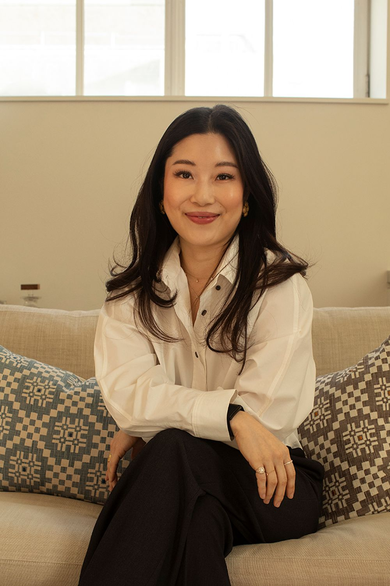
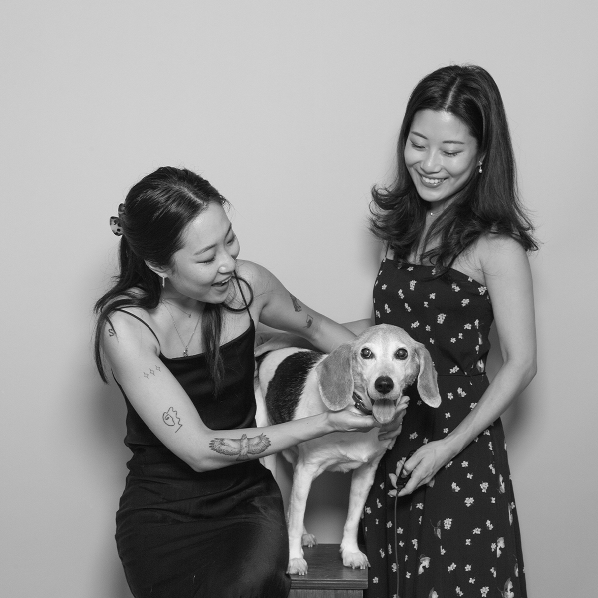
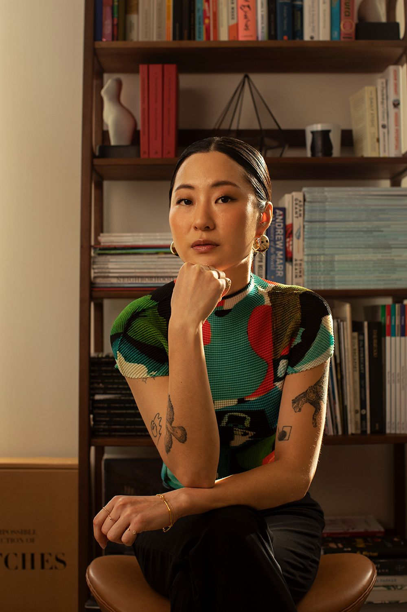

Tess
During a career in tech and start-ups, Tess kept balancing high-performance workdays with social nights. That is what made her want to share Korea’s recovery rituals, the ones traditionally used before and after a celebration.
Korean apothecary for the night after · 4.9/5 from verified reviews
Our story

We took a first step to address something that was a real issue in our lives, and to bring something personal from our culture and heritage. After a year of research and preparation, we launched AWKN.
It is important that we share that journey, and invite you to be part of it. From our family to yours.

During a career in tech and start-ups, Tess kept balancing high-performance workdays with social nights. That is what made her want to share Korea’s recovery rituals, the ones traditionally used before and after a celebration.

For years Soom held back at gatherings because of a sensitivity many people of East Asian descent know as Asian flush. AWKN became a personal ritual for staying in the celebration.